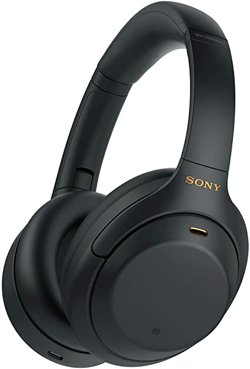
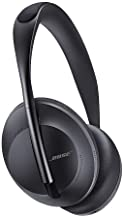
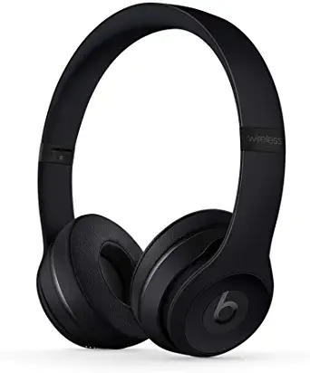

| products |
Name |
detail |
total |
|

|
Sony WH-1000XM4 Wireless Industry Leading Noise Canceling Overhead Headphones
|
Industry-leading noise canceling with Dual Noise Sensor technology
Next-level music with Edge-AI, co-developed with Sony Music Studios Tokyo
Up to 30-hour battery life with quick charging (10 min charge for 5 hours of playback)
Touch Sensor controls to pause/play/skip tracks, control volume, activate your voice assistant, and answer phone calls
Speak-to-chat technology automatically reduces volume during conversations
Superior call quality with precise voice pickup
Wearing detection pauses playback when headphones are removed |
₹26,166 |

|
AirPods Max |
Apple-designed dynamic driver
Up to 20 hours of listening time on a single charge with Active Noise Cancellation or Transparency mode enabled3
Storage in the Smart Case preserves battery charge in ultra-low-power state
Charging via Lightning connector
iPhone and iPod touch models with the latest version of iOS
iPad models with the latest version of iPadOS
|
₹59999 |
|

|
Bose Noise Cancelling Wireless Bluetooth Headphones 700, with Alexa Voice Control, Black |
Keep your head up and hands free — With easy access to voice assistants like Alexa and Google Assistant for music, navigation, weather, and more, and intuitive touch control on the earcups — you can stay connected without reaching for your phone
Premium design and comfort — With a lightweight stainless steel headband and earcups tilted for the perfect fit, you can comfortably wear these Bluetooth headphones for hours
Up to 20 hours of non-stop music — Get up to 20 hours of wireless battery life on a single charge |
₹34500 |
|

|
Beats Solo3 Wireless On-Ear Headphones - Apple W1 Headphone Chip, Class 1 Bluetooth, 40 Hours of Listening Time, Built-in Microphone - Black |
High-performance wireless Bluetooth headphones in black
Features the Apple W1 chip and Class 1 wireless Bluetooth connectivity
With up to 40 hours of battery life, Beats Solo3 wireless is your perfect everyday headphone
Compatible with iOS and Android devices
With Fast Fuel, 5 minutes of charging gives you 3 hours of playback when battery is low
Adjustable fit with comfort-cushioned ear cups made for everyday use
Sleek, streamlined design that’s durable and affordable to go everywhere you do |
₹16999 |